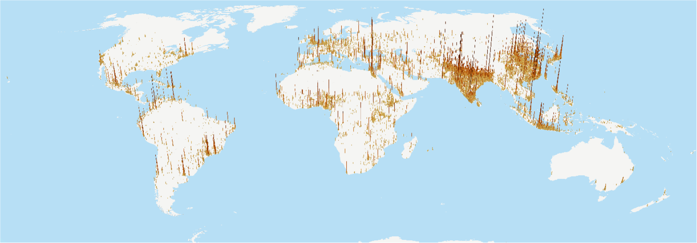
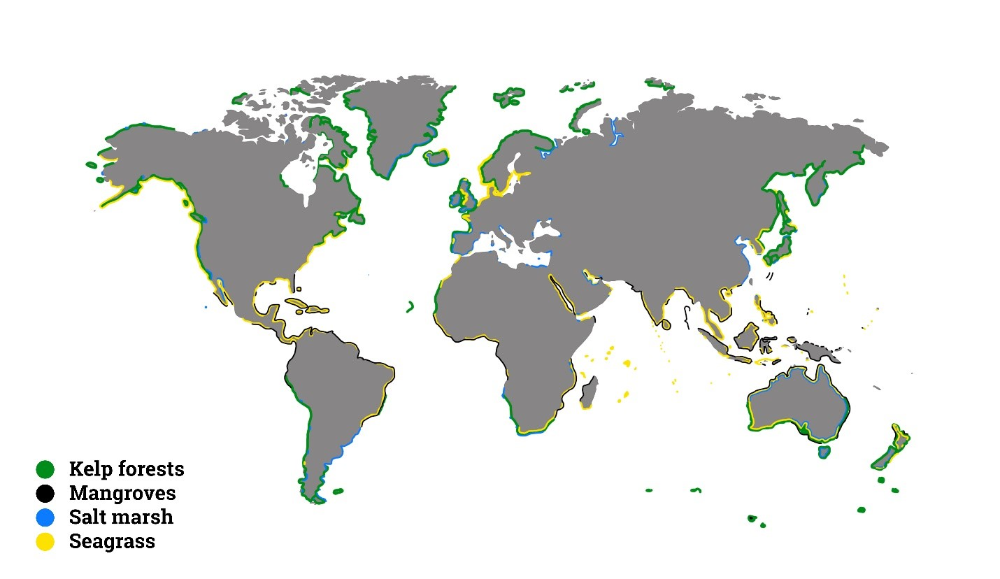
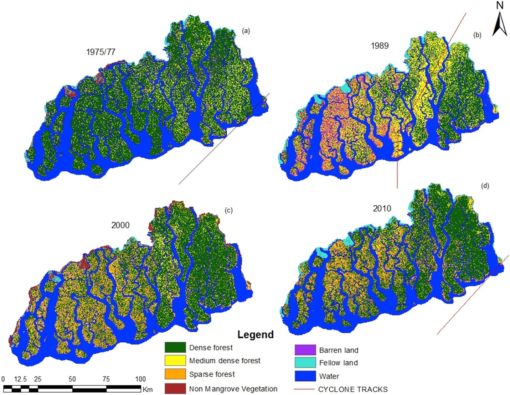
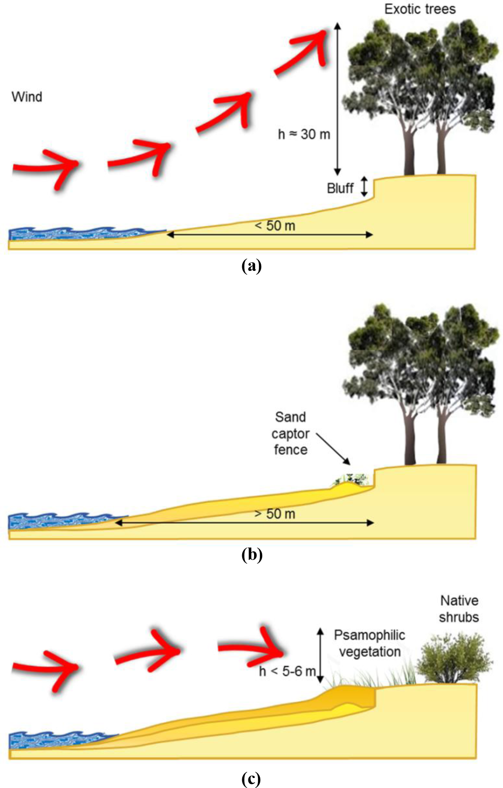

This lecture provides an overview of the applications of nature-based solutions for coastal protection. The principles underlying such applications are illustrated, particularly, how nature-based solutions provide flexibility and adaptation under a changing climate. Examples of implementing nature-based solutions for coastal protection in practice are presented.
Recognise the value of nature-based solutions for coastal protection
Obtain a basic understanding of how nature-based solutions will adjust and adapt to future climate along the coast.
Human settlements are concentrated near the coast (Figure 16.2.1). Over 40% of the world’s population lives within 100 km of the coastline (Martinez et al. 2007). The coastal urban population has doubled in the last 40 years from 45 to 88 million (Martino et al. 2016). Seven of the world’s 10 largest cities are coastal (Martino et al. 2016):
Los Angeles, USA (coastal)
Tokyo, Japan (coastal)
Jakarta, Indonesia (coastal)
Guangzhou/Dongguan (coastal)
New York City, USA (coastal)
Chicago, USA
Johannesburg/Pretoria, South Africa
Dallas, USA
Miami, USA (coastal)
Osaka, Japan (coastal).

Figure 16.2.1: Global population grid in 3D(Martino et al. 2016)
Various coastal ecosystems, such as coastal wetlands including mangroves and marshes, coral and oyster reefs, sand beaches and dunes, and seagrass, are located around different regions of the world (Figure 16.2.2). These coastal ecosystems provide vital provisioning, regulation, supporting, and cultural services:
Provisioning service: products generated from the ecosystem, such as fish, shellfish, and wood
Regulating service: the regulation of ecosystem processes, such as erosion control, flood regulation, storm protection, water purification, and climate regulation
Supporting service: the support of all other ecosystem services, such as soil formation, primary production, and nutrient cycling
Cultural service: the spiritual and emotional benefits people obtain from ecosystems, such as cultural heritage values, tourism, and recreation.
These services can be vital to coastal communities, such as food provision and storm protection, and to the global society, such as biodiversity conservation and climate mitigation.

Figure 16.2.2: Global distribution of kelp forests, mangroves, salt marsh, and seagrass (Krause-Jensen, Duarte, and Frigstad 2018)
This lecture will provide an overview of the applications of nature-based solutions in coastal protection. The principles underlying such applications will be illustrated, particularly how nature-based solutions provide flexibility and adaptation under a changing climate. Examples of implementing nature-based solutions for coastal protection in practice will also be presented.
Under a changing climate, coastal communities are under increasing threats from rising sea-levels and more frequent and intense tropical cyclone. By 2050, sea-level rise of at least 0.5m compared to the 2000 to 2004 baseline period will affect nearly 600 low-lying coastal cities, leading to potential economic losses of up to USD1 trillion (Kapos et al. 2019). The globally-averaged storm intensity is expected to increase by 2–11% by 2100 due to greenhouse warming, and the storm surges are likely to increase with the rising sea-level (Knutson et al. 2010; Smith et al. 2010).
One of the most important services coastal ecosystem provide is the protection to coastal communities. Nature-based solutions for coastal protection include protecting, managing, or restoring coastal ecosystems to act against hazards such as flooding, shoreline erosion, storm damage and sea-level rise. The world’s existing mangroves are estimated to reduce the number of people affected by coastal flooding globally by some 39%, and the total value of flooding-related property damage by 16% (Losada et al. 2018). Without the world’s coral reefs, global annual damages from coastal flooding would double, the costs from frequent storms would triple, and the costs of flood damage from severe storms (100-year events) would increase by over 90% to USD272 billion (Kapos et al. 2019).
Nature-based solutions are more sustainable and ecologically sound compared to conventional coastal engineering structures, and are able to provide valuable co-benefits. Table 16.2.1 summarises the engineered and nature-based options for coastal protection and highlights some of the co-benefits of the nature-based solutions.
Table 16.2.1: Nature-based solutions for coastal protection and their co-benefits (Kapos et al. 2019; World Bank 2016)
| Hazards | Hard Engineering options | Nature-based solutions | Co-benefits |
|---|---|---|---|
| Flooding |
|
|
|
| Shoreline erosion |
|
|
|
| Storm damage |
|
|
|
| Sea-level rise |
|
|
|
| Pollution, eutrophication hypoxia |
|
|
|
| Salinisation |
|
|
Index-based and processing-driven tools are developed to spatially estimate the role and value of natural habitats in coastal protection and risk reduction, including the Coastal Vulnerability Module in the Integrated Valuation of Ecosystem Services and Trade-offs (InVEST), the Artificial Intelligence for Ecosystem Services (ARIES), and the Multiscale Integrated Models of Ecosystem Services (MIMES). A more through discussion of the tools can be found in a report by the World Bank (World Bank 2016).
As discussed above, coastal ecosystems provide protection against natural hazards and are able to self-adjust under different future climates. Conventional grey solutions, on the other hand, may fail in a future climate that is different than the one they were designed for. Coastal vegetation is able to adjust to sea-level by inorganic and organic accretion(World Bank 2016), leading to self-expansion and increase in land area despite a rising sea-level (Zhai et al. 2019).
Moreover, coastal vegetation can mitigate climate change by sequestering CO2. The carbon stored in coastal wetlands is an important component of the global carbon budget(Duarte et al. 2013). Coastal marshes have high primary production, efficiently trapping suspended organic carbon when flooded, and undergoing slow carbon decomposition rates under anaerobic conditions (McLeod et al. 2011; Nellemann and Corcoran 2009). The amount of carbon stored per unit area in stable coastal marshes can be far greater than that of forests, and the carbon stored may remain for millennia, as compared to decades or centuries in forests (Windham-Myers, Crooks, and Troxler 2018). Figure 16.2.3 shows the key processes of vegetated coastal habitats for climate change mitigation and adaptation.
Figure 16.2.3: Key processes of vegetated coastal habitats for climate change mitigation and adaptation (Duarte et al. 2013). Processes that affect the capacity for climate change mitigation (CO2 sinks) and adaptation (shoreline protection from rising sea level) are shown for seagrass meadows (upper panel), salt marshes (middle panel) and mangrove forests (lower panel). Blue arrows indicate transport of atmospheric or dissolved material, red arrows show transport of particulates and purple arrows indicate vegetative growth.
However, the ability of coastal ecosystem to adjust to a changing climate can be impaired by anthropogenic activities, such as land convention and limiting the potential expansion of the ecosystem(Richards and Friess 2016). In order to have effective nature-based solutions, strategies should also account for the natural and human constraints in the region of interest.
Bangladesh, a tropical developing country, faces high stress from hurricanes, but also houses the world’s largest stretch of mangrove forests. The mangroves provide various goods and services to the local population. Particularly, mangroves in the area can substantially reduce water flow velocity (by 29–92%) and surge height (by 4–16.5 cm) (Dasgupta et al. 2019). Nevertheless, the mangrove forests are subject to rapid degradation (Figure 16.2.4). Since 1966, Bangladesh has established different coastal afforestation programmes to conserve and restore their mangrove for cyclone protection and improved stabilisation of the coastal area. These programmes aim to:
Mitigate disastrous effects of cyclones and storm surges (primary)
Supply urgently needed resources for the national economy (i.e. timber and new land for agriculture)
Create employment opportunities for remote rural communities
Develop suitable environments for wildlife, fish, and other estuarine and marine fauna.

Figure 16.2.4: Land cover maps of the Sundarban mangrove forest, obtained from Landsat image classification for (a) 1975/1977, (b) 1989, (c) 2000 and (d) 2010. Cyclone tracks of November 1970, November 1988, and that of cyclone SIDR in November 2007 are shown on classified image of 1975, 1989 and 2010 respectively (Quader, Agrawal, and Kervyn 2017)
The program has achieved a certain level of success by accreting approximately 500km2 of new land in Bangladesh each year (Iftekhar and Islam 2004). However, the survival rate of the planted mangrove is low due to the dynamic nature of the Bangladesh coast, requiring replacement planting every 3 years on average (Saenger and Siddiqi 1993). In addition, while it usually takes 20 years for the new land to become mature enough for human settlement, people start to clear forest and begin living and developing shrimp farms on the new land 5 to 6 years after new land formation (Iftekhar and Islam 2004).
Over 10 % of Uruguay’s population live in the low elevation coastal zone (Villamizar et al. 2016). In 2012, Kiyú, at the Rio de la Plata’s tidal river estuary coast, was impacted by a storm and experienced a total direct loss of USD1,000,000. After the event, a sub-national government, the Departmental Office of Climate Change (DOCC), was formed to lead a pilot adaptation programme of using nature-based solutions to improve the resilience of Kiyú against extreme events (Carro et al. 2018).
This programme was implemented through:
An integrated coastal management framework with five phases: identification and selection of key management elements; action planning; formal adoption and funding; implementation; and evaluation
A vulnerability reduction assessment to assess local stakeholders’ vulnerability and risk perception
Ecosystem-based adaptation measures to achieve a three-way synergy between ecosystem conservation, socioeconomic development, and climate adaptation
A beach profiling programme to monitor changes in the beach slope and width.
The implemented ecosystem-based adaptation measures are a mix of nature-based solutions and hard engineering approaches:
Building 1,200m of captor fences to capture the sand moved by the wind
Re-structuring local forest vegetation by cutting large-size Eucalyptus trees (~30m high) and planting native shrubs behind the fence captor (Figure 16.2.5)
Constructing over 600m of gutters (storm drains) to reduce erosion and re-profiling coastal roads to allow the rainwater to enter the gutters.

Figure 16.2.5: Schematic representation of the beach profile (a) before, and (b) after the implementation of soft interventions. Panel (c) shows the desired near-future state, illustrating an ideal rebuilding of both beach profile and ridge of dunes (Carro et al. 2018).
The Kiyú pilot project was implemented in 2013 and 2014. It demonstrated sufficient success for Uruguay to launch a second cycle of coastal management projects, expanding the actions along the coast of San José, starting 2015.
Nature-based solutions provide effective coastal protection. More importantly, nature-based solutions offer extra flexibility and adaptation to a changing climate compared to traditional grey engineering options. The case studies of restoring mangroves in Bangladesh for storm protection and of planting native shrubs in Uruguay for preventing shoreline erosion have demonstrated how nature-based solutions can be implemented to protect coastal communities in the real world.